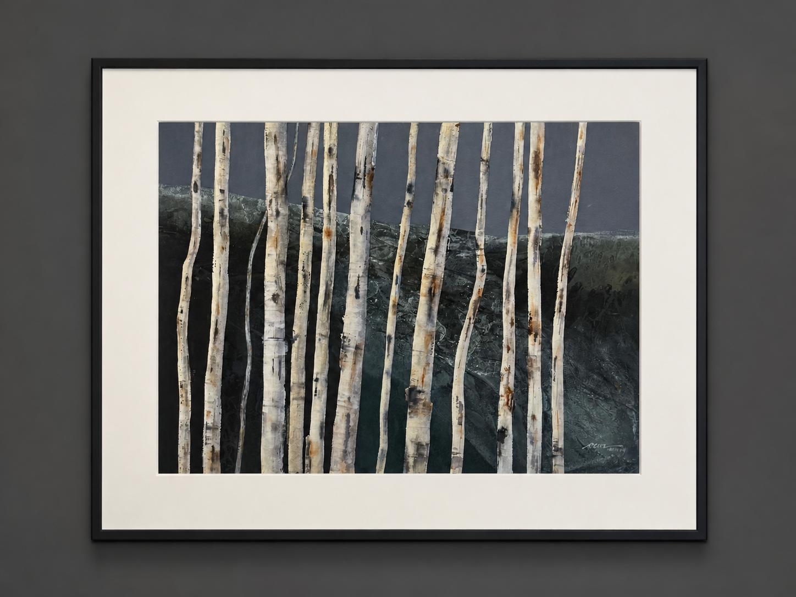

AMBLESIDE ARTIST
Pat Dews
Watermedia · Collage · Experimental Abstraction
FEATURED WORK

Birch Parade
Pat Dews
THE ARTIST
The abstract
essence of
nature.
Pat Dews is an experimental watermedia artist whose paintings are rooted in the forms, textures and rhythms of the natural and built environment.
A graduate of the Fashion Institute of Technology in New York City, Dews has developed a distinctive visual language in which flowers, rocks, water, crumbling walls and weathered or rusted objects are translated into richly layered painted surfaces.
Her work often integrates collage and brings together organic and geometric forms, transparent and opaque passages of paint, strong color and carefully structured value.
Beneath the apparent freedom of the surface lies a strong abstract foundation. Dews uses underlying shape and composition to hold together layers of texture, color and gesture, creating paintings that feel both spontaneous and highly resolved.
She is a signature member and Dolphin Fellow of the American Watercolor Society, as well as a member of the National Watercolor Society, National Collage Society, New Jersey Water Color Society and Florida Watercolor Society.
THE WORK
Less can become more — much more.
THE PROCESS
A dance of
texture, form
and color.
Dews' paintings emerge through an active process of layering, balancing and responding to the surface as it develops.
Organic shapes meet geometric structures. Transparent washes move against opaque passages. Collage, texture and strong shifts in value become part of the composition rather than simply decorative additions.
The resulting work reflects a lively tension between control and experimentation. Simple tools and materials are pushed toward complex visual relationships, allowing the image to move away from literal description and toward the abstract character of its source.
In this sense, nature is not copied. It is distilled into shape, rhythm, color and surface.
SELECTED WORKS
The Collection
Iris Essence
Luminosity
Nature's Dance
Techi
Slippery Slope
Turquoise Flowers in Vase
RECOGNITION
Selected Awards
ARTIST'S MAGAZINE
Second Place, 33rd Annual Artist's Magazine, Abstract/Experimental category, for Overpass.
2017
Mary Bryan Memorial Award, American Watercolor Society 150th International Exhibition.
2016
Edgar Whitney Memorial Award, 149th American Watercolor International Exhibition.
2015
Paul B. Remmey, AWS, Memorial Award, 148th American Watercolor Society International Exhibition.
2016
China Zou Yinong Silver Award, China/NWS Small Image Exhibition.
INTERNATIONAL
Exhibitions
2015
Small Image Exchange, China.
2015
Shenzhen International Biennial Exhibition, China.
AUTHOR & INSTRUCTOR
Sharing the Practice
2003
Author of The Painter's Workshop: Creative Composition & Design.
1998
Author of Creative Discoveries in Watermedia, published by North Light Books.
VIDEO
Designing Great Starts with Texture and Form.
VIDEO
Let's Get Started Finishing.
TEACHING
Dews teaches workshops internationally and is known for an energetic, process-centered approach to instruction.
PROFESSIONAL AFFILIATIONS
Watercolor & Collage
AWS
Signature Member and Dolphin Fellow, American Watercolor Society.
NWS
National Watercolor Society.
NCS
National Collage Society.
NJ
New Jersey Water Color Society.
FL
Florida Watercolor Society.
COLLECT